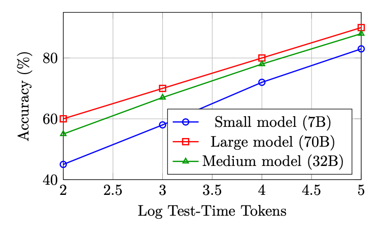
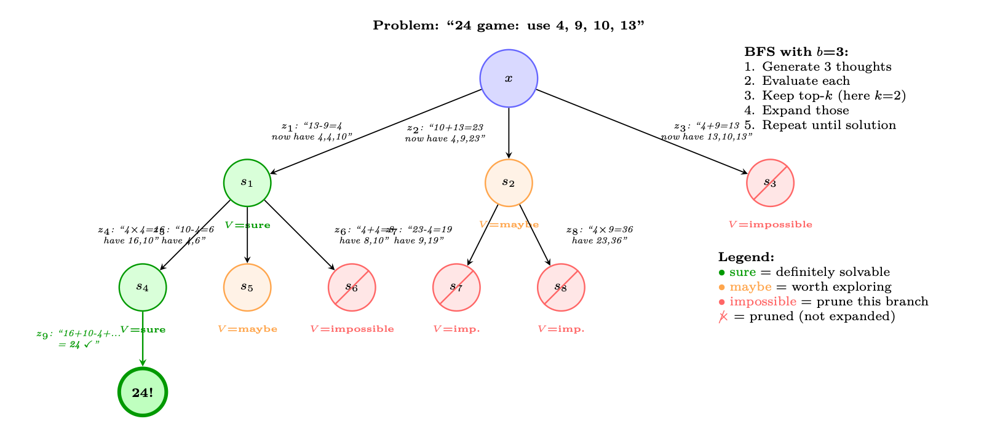
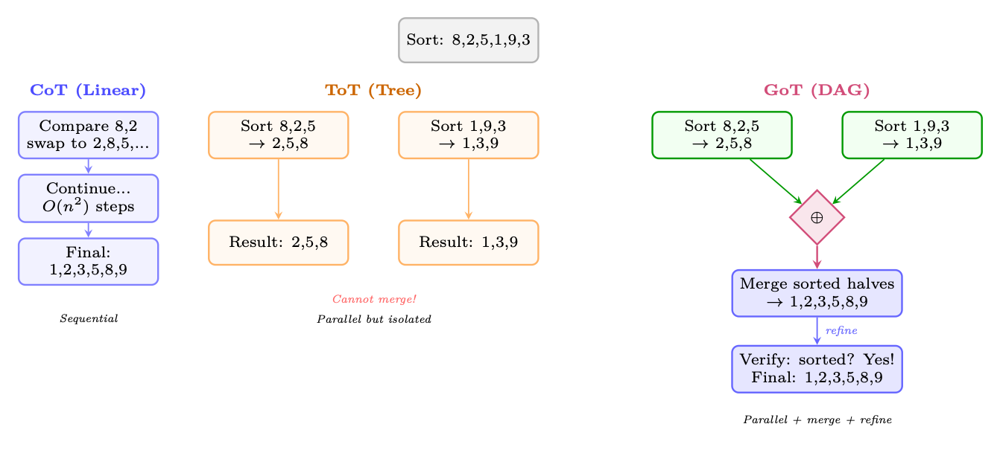
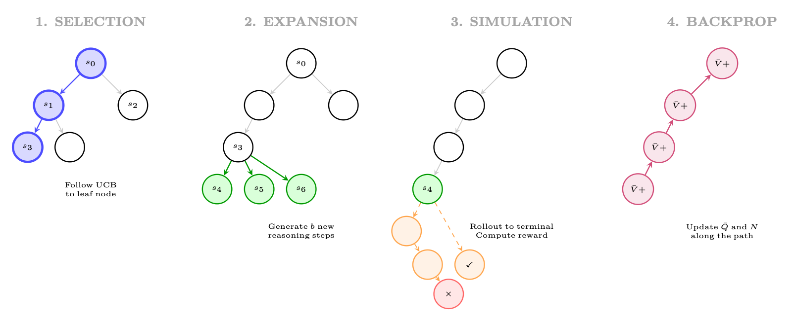

<!doctype html>
<html lang="zh-CN">
<head>
  <meta charset="utf-8" />
  <meta name="viewport" content="width=device-width, initial-scale=1" />
  <title>大型推理模型的强化学习 | 智能体式 AI 漫游指南</title>
  <meta name="description" content="本章整理该主题的关键概念、方法、系统实践和工程注意事项。" />
  <meta property="og:title" content="大型推理模型的强化学习 | 智能体式 AI 漫游指南" />
  <meta property="og:description" content="本章整理该主题的关键概念、方法、系统实践和工程注意事项。" />
  <meta property="og:type" content="article" />
  <link rel="canonical" href="https://conanxin.github.io/hitchhikers-guide-agentic-ai-zh/" />
  <link rel="stylesheet" href="../assets/css/main.css" />
  <link rel="stylesheet" href="../assets/css/article.css" />
  <link rel="stylesheet" href="../assets/css/responsive.css" />
</head>
<body class="article-page">
  <div class="reading-progress" id="reading-progress"></div>
  <header class="topbar">
    <a class="brand" href="../index.html"><span class="brand-mark">AST</span><span><strong>智能体式 AI 漫游指南</strong><small>结构化知识文档系统</small></span></a>
    <button class="nav-toggle" id="nav-toggle" aria-label="打开导航" aria-expanded="false"><span></span><span></span><span></span></button>
    <nav class="topnav" id="topnav"><a class="" href="../index.html">首页</a><a class="active" href="../chapters/index.html">章节</a><a class="" href="../glossary.html">术语表</a><a class="" href="../references.html">参考文献</a><a class="" href="../search.html">搜索</a><a class="" href="https://arxiv.org/pdf/2606.24937v1" target="_blank" rel="noopener">原 PDF</a></nav>
  </header>
  <main class="layout"><aside class="left-nav" id="left-nav"><div class="nav-section-title">语义目录</div><div class="nav-cluster"><strong>导读</strong><a class="chapter-link " href="../chapters/chapter-01.html"><span class="chapter-num">01</span><span>导读与前置说明</span></a><a class="chapter-link " href="../chapters/chapter-09.html"><span class="chapter-num">09</span><span>偏好优化变体</span></a></div><div class="nav-cluster"><strong>LLM 基础与系统</strong><a class="chapter-link " href="../chapters/chapter-02.html"><span class="chapter-num">02</span><span>LLM 架构和优化方法</span></a><a class="chapter-link " href="../chapters/chapter-03.html"><span class="chapter-num">03</span><span>LLM 的系统基础</span></a><a class="chapter-link " href="../chapters/chapter-12.html"><span class="chapter-num">12</span><span>大规模系统架构与基础设施</span></a></div><div class="nav-cluster"><strong>训练、强化学习与对齐</strong><a class="chapter-link " href="../chapters/chapter-04.html"><span class="chapter-num">04</span><span>强化学习简介</span></a><a class="chapter-link " href="../chapters/chapter-05.html"><span class="chapter-num">05</span><span>语言模型的强化学习基础</span></a><a class="chapter-link " href="../chapters/chapter-06.html"><span class="chapter-num">06</span><span>PPO：近端策略优化</span></a><a class="chapter-link " href="../chapters/chapter-07.html"><span class="chapter-num">07</span><span>DPO：直接偏好优化</span></a><a class="chapter-link " href="../chapters/chapter-08.html"><span class="chapter-num">08</span><span>GRPO：组相对策略优化</span></a><a class="chapter-link " href="../chapters/chapter-10.html"><span class="chapter-num">10</span><span>奖励模型训练</span></a><a class="chapter-link " href="../chapters/chapter-11.html"><span class="chapter-num">11</span><span>SFT 最佳实践与技术</span></a><a class="chapter-link active" href="../chapters/chapter-14.html"><span class="chapter-num">14</span><span>大型推理模型的强化学习</span></a></div><div class="nav-cluster"><strong>Agentic AI 系统</strong><a class="chapter-link " href="../chapters/chapter-13.html"><span class="chapter-num">13</span><span>LLM 智能体训练</span></a><a class="chapter-link " href="../chapters/chapter-16.html"><span class="chapter-num">16</span><span>智能体式 AI 简介</span></a><a class="chapter-link " href="../chapters/chapter-17.html"><span class="chapter-num">17</span><span>检索增强生成（RAG）</span></a><a class="chapter-link " href="../chapters/chapter-18.html"><span class="chapter-num">18</span><span>智能体记忆系统</span></a><a class="chapter-link " href="../chapters/chapter-19.html"><span class="chapter-num">19</span><span>智能体执行框架：上下文管理与编排</span></a><a class="chapter-link " href="../chapters/chapter-20.html"><span class="chapter-num">20</span><span>智能体设计模式</span></a><a class="chapter-link " href="../chapters/chapter-21.html"><span class="chapter-num">21</span><span>智能体环境与基准</span></a><a class="chapter-link " href="../chapters/chapter-22.html"><span class="chapter-num">22</span><span>模型上下文协议（MCP）</span></a><a class="chapter-link " href="../chapters/chapter-23.html"><span class="chapter-num">23</span><span>智能体技能</span></a><a class="chapter-link " href="../chapters/chapter-24.html"><span class="chapter-num">24</span><span>智能体间通信（A2A）</span></a><a class="chapter-link " href="../chapters/chapter-25.html"><span class="chapter-num">25</span><span>多智能体系统</span></a><a class="chapter-link " href="../chapters/chapter-26.html"><span class="chapter-num">26</span><span>智能体开发框架</span></a><a class="chapter-link " href="../chapters/chapter-27.html"><span class="chapter-num">27</span><span>智能体式 UI 框架</span></a></div><div class="nav-cluster"><strong>推理与评估</strong><a class="chapter-link " href="../chapters/chapter-15.html"><span class="chapter-num">15</span><span>LLM 评估</span></a></div><div class="nav-cluster"><strong>参考与总结</strong><a class="chapter-link " href="../chapters/chapter-28.html"><span class="chapter-num">28</span><span>测验题与详解</span></a><a class="chapter-link " href="../chapters/chapter-29.html"><span class="chapter-num">29</span><span>速查表</span></a><a class="chapter-link " href="../chapters/chapter-30.html"><span class="chapter-num">30</span><span>结论与未来方向</span></a></div></aside><section class="content-shell">
        <article class="article-card" data-ast-source="../assets/data/clean_chapter_tree.json">
          <header class="article-header">
            <p class="part-label">训练、强化学习与对齐</p>
            <h1>大型推理模型的强化学习</h1>
            <p>本章整理该主题的关键概念、方法、系统实践和工程注意事项。</p>
          </header>
          <aside class="component key-concepts-panel"><span class="component-label">Key Concepts</span><div class="concept-chip"><strong>智能体</strong><span>Agent</span><p>能够感知状态、规划行动、调用工具并迭代完成任务的系统单元。</p></div><div class="concept-chip"><strong>标记 / token</strong><span>Token</span><p>语言模型处理文本的基本离散单位。</p></div><div class="concept-chip"><strong>注意力</strong><span>Attention</span><p>根据查询、键和值计算上下文加权表示的机制。</p></div><div class="concept-chip"><strong>强化学习</strong><span>Reinforcement Learning</span><p>通过奖励信号优化策略的学习范式。</p></div><div class="concept-chip"><strong>奖励模型</strong><span>Reward Model</span><p>把候选输出映射为偏好或质量分数的模型。</p></div><div class="concept-chip"><strong>策略</strong><span>Policy</span><p>在状态下选择动作或生成 token 的概率分布。</p></div><div class="concept-chip"><strong>轨迹</strong><span>Trajectory</span><p>智能体与环境交互形成的状态、动作、观察和奖励序列。</p></div><div class="concept-chip"><strong>推理</strong><span>Inference</span><p>模型在部署或测试时生成输出的过程。</p></div></aside>
          <div class="article-body"><section class="ast-section" id="chapter-14-s01"><div class="component section-overview"><div><span class="component-label">Section Overview</span><h2>动机与背景</h2><p>本节聚焦“动机与背景”的定义、机制与工程含义。</p></div><div class="mini-concepts"><div class="concept-chip"><strong>标记 / token</strong><span>Token</span><p>语言模型处理文本的基本离散单位。</p></div><div class="concept-chip"><strong>强化学习</strong><span>Reinforcement Learning</span><p>通过奖励信号优化策略的学习范式。</p></div><div class="concept-chip"><strong>策略</strong><span>Policy</span><p>在状态下选择动作或生成 token 的概率分布。</p></div><div class="concept-chip"><strong>推理</strong><span>Inference</span><p>模型在部署或测试时生成输出的过程。</p></div></div></div><div class="section-blocks"><p class="content-block paragraph">大型推理模型的出现代表了数学领域最重要的发展之一 现代人工智能。与针对下一个标记预测进行优化的标准语言模型训练不同， 以推理为中心的强化学习教会模型在回答之前进行思考——在以下位置分配额外的计算 探索、验证和完善中间步骤的推理时间。本节提供了全面的 对支撑这一范式的方法、架构和缩放法则的技术处理。</p><p class="content-block paragraph">动机和背景</p><p class="content-block paragraph">为什么推理需要不同的强化学习方法</p><p class="content-block paragraph">标准 RLHF（第 4.3 节）在完整响应上优化单个标量奖励。对于任务 需要多步骤推理——数学、形式验证、竞争性编程、科学 推导——由于以下几个原因，这个公式是不够的：</p><p class="content-block paragraph">• 稀疏奖励：一道数学题可能需要 20 个中间步骤；单一结果奖励 不为导致错误的中间步骤提供梯度信号。</p><p class="content-block paragraph">• 长远视野：推理链可以跨越数百到数千个token，从而产生严重的 学分分配问题。</p><p class="content-block paragraph">• 组合搜索：有效推理路径的空间呈指数级增长；模型 必须学会有效地搜索这个空间。</p><p class="content-block paragraph">• 可验证性：与主观文本质量不同，数学和logits正确性是客观的 可验证，无需人工注释即可自动计算奖励。</p><p class="content-block paragraph">关键见解：推理作为搜索问题</p><p class="content-block paragraph">多步推理可以被构建为在部分解决方案树上的搜索问题。每个 树中的节点是一个推理状态（思想链的前缀），每条边都是一个推理步骤 （一个标记或句子），叶子是最终答案。推理强化学习教会模型 有效地导航这棵树——探索有前途的分支，从死胡同回溯，以及 将计算分配在最重要的地方。</p><p class="content-block paragraph">思想链：突发行为与训练有素的能力</p><p class="content-block paragraph">思维链（CoT）推理首先被观察为在足够大的情况下的涌现能力 语言模型 [122]：当提示逐步示例时，大型模型（通常≥100B 参数）自发地产生了提高准确性的中间推理步骤。这个 提出了一个基本问题：CoT 是规模的新兴属性，还是可以明确地训练？ 正如 DeepSeek-R1 和相关工作所证明的那样，答案是两者兼而有之——但重要的是 细微差别：</p><p class="content-block paragraph">• 紧急CoT 源于情境学习，需要大型基础模型。它是脆性的， 提示敏感，并且不能稳健地泛化。</p><p class="content-block paragraph">• 通过 RL 训练的 CoT 生成的模型本质上生成推理链作为一部分 他们的生成过程，独立于提示风格。这些链条更长、更多 探索性的，并表现出性质不同的行为（自我纠正、回溯、验证 化）。</p><p class="content-block paragraph">“顿悟时刻”现象（DeepSeek-AI 等人，2025）</p><p class="content-block paragraph">在推理模型的 RL 训练过程中，DeepSeek 的研究人员观察到了一个惊人的新现象 行为：在训练的某个时刻，模型自发地开始重新考虑他们最初的想法 接近中链，使用诸如“等等，让我重新考虑……”或“实际上，我认为我做了 一个错误。。。 ”。这种未经明确训练的自我纠正行为纯粹是出现的 来自最大化最终答案准确性的 RL 目标。这表明 RL 可以发现 对于解决难题非常有用的元认知策略。</p><p class="content-block paragraph">测试时计算缩放法则</p><p class="content-block paragraph">激励推理模型研究的一个核心实证发现是测试时间计算规模 性能可预测。令 Ctrain 表示训练计算（FLOPs），Ctest 表示 推理计算（生成token）。关键的观察是：</p><div class="component formula-component" data-fallback="latex"><div class="block-label">公式</div><pre class="formula"><code>Accuracy(Ctrain, Ctest) ≈f(α log Ctrain + β log Ctest) (13.1)</code></pre></div><p class="content-block paragraph">对于某些单调函数 f 和常数 α, β &gt; 0。这意味着较小的模型 更多的推理计算可以用更少的推理计算匹配更大的模型——这是一个根本性的转变 在计算性能权衡中。</p><p class="content-block paragraph">图 13.1：测试时计算缩放曲线示意图。通过推理，性能以对数线性方式提高 跨模型大小的token，具有更多计算量的较小模型可以用更少的计算量接近较大的模型 计算。</p><p class="content-block paragraph">实际意义是深远的：推理模型用训练计算来换取 推理计算。人们可以部署一个模型，而不是总是部署尽可能大的模型 更小的、具有推理能力的模型，并分配更多的token来“思考”难题。</p><figure class="component figure-component"><figcaption>图示：来自原文档的结构、表格或公式区域。</figcaption></figure></div></section><section class="ast-section" id="chapter-14-s02"><div class="component section-overview"><div><span class="component-label">Section Overview</span><h2>测试时扩展方法</h2><p>本节聚焦“测试时扩展方法”的定义、机制与工程含义。</p></div><div class="mini-concepts"><div class="concept-chip"><strong>智能体</strong><span>Agent</span><p>能够感知状态、规划行动、调用工具并迭代完成任务的系统单元。</p></div><div class="concept-chip"><strong>标记 / token</strong><span>Token</span><p>语言模型处理文本的基本离散单位。</p></div><div class="concept-chip"><strong>注意力</strong><span>Attention</span><p>根据查询、键和值计算上下文加权表示的机制。</p></div><div class="concept-chip"><strong>奖励模型</strong><span>Reward Model</span><p>把候选输出映射为偏好或质量分数的模型。</p></div><div class="concept-chip"><strong>策略</strong><span>Policy</span><p>在状态下选择动作或生成 token 的概率分布。</p></div></div></div><div class="section-blocks"><p class="content-block paragraph">测试时间缩放方法</p><p class="content-block paragraph">上述缩放定律表明，在推理上投入更多计算可以显着提高 推理表现。本节提供了对以下方法的综合处理： 实施测试时间扩展——从简单的思想链到复杂的树和图搜索 算法。这些方法形成了频谱交易推理成本的准确性和理解 它们的结构对于设计现代推理系统至关重要。</p><p class="content-block paragraph">图 13.2：测试时间缩放方法的范围。每种方法都需要额外的推理计算来换取 提高推理准确性。方法在概念上相互构建：CoT 引入显式推理， Self-Consistency增加了采样，ToT增加了结构化搜索，GoT增加了合并操作，MCTS增加了 学到了价值引导。</p><p class="content-block paragraph">思想链 (CoT)</p><p class="content-block paragraph">思想链提示[122]是所有测试时间缩放方法的基础。而不是 直接输出答案，模型生成分解的中间推理步骤 将复杂的问题分解为可管理的子问题。</p><p class="content-block paragraph">零射击 CoT。 小岛等人。 [123]证明将“让我们一步一步思考” 提示可以在没有任何范例的情况下引发推理行为。这个简单的触发器激活了潜在的 足够大的模型（≥100B 参数）的推理能力。</p><p class="content-block paragraph">少发 CoT。 魏等人。 [122]表明提供一些具有明确推理的范例 痕迹使较小的模型能够有效地推理：</p><p class="content-block paragraph">提示 = [(x1, z1, y1), (x2, z2, y2), .。。 , (xk, zk, yk), (xtest, ?)] (13.2)</p><p class="content-block paragraph">其中 zi 是范例 (xi, yi) 的手写推理轨迹。</p><p class="content-block paragraph">正式表征。 CoT 将单步预测 p(y|x) 转换为多步顺序预测 一代： p(y|x) = X</p><div class="component code-component"><div class="block-label">text</div><pre><code>z
p(y|x, z) · p(z|x) ≈p(y|x, z∗) · p(z∗|x)
(13.3)</code></pre></div><p class="content-block paragraph">其中 z*= (z1, z2, ..., zT ) 是贪婪推理链。所有可能的链的总和是 棘手的；标准 CoT 使用单个样本（贪婪或温度采样）。</p><p class="content-block paragraph">局限性。 单链 CoT 是脆弱的：如果早期推理步骤错误，所有后续步骤 建立在有缺陷的基础上，没有恢复机制。</p><p class="content-block paragraph">自我一致性（多数投票）</p><p class="content-block paragraph">自我一致性[124]通过对多个独立的样本进行采样来解决 CoT 的单链脆弱性 推理链并对最终答案进行多数投票：</p><p class="content-block paragraph">氮 X</p><div class="component code-component"><div class="block-label">text</div><pre><code>y = arg 最大值</code></pre></div><div class="component code-component"><div class="block-label">text</div><pre><code>i=1
1[yi = y],
where (zi, yi) ∼p(·|x), T &gt; 0
(13.4)</code></pre></div><p class="content-block paragraph">主要特性：</p><figure class="component figure-component"><figcaption>图示：来自原文档的结构、表格或公式区域。</figcaption></figure><div class="component code-component"><div class="block-label">text</div><pre><code>• 使用温度 T &gt; 0 采样生成不同的链（通常 T = 0.7–1.0）</code></pre></div><p class="content-block paragraph">• 链之间没有交互——完全可并行化</p><p class="content-block paragraph">• 准确度随 N 单调提高（N ≈40 后收益递减）</p><div class="component code-component"><div class="block-label">text</div><pre><code>• 在 GSM8K 上：CoT = 56.5%，自一致性 (N=40) = 74.4%（使用 PaLM-540B [221]）</code></pre></div><p class="content-block paragraph">• 相当于具有结果奖励的 Best-of-N（多数投票充当隐式 ORM）</p><p class="content-block paragraph">Why Majority Voting Works</p><p class="content-block paragraph">如果模型生成正确推理链的概率 p &gt; 0.5，则根据定律 大量投票时，对 N 个独立样本的多数投票接近 100% 准确度，如下所示</p><div class="component code-component"><div class="block-label">text</div><pre><code>N → 无穷大。即使 p = 0.3（模型通常是错误的），如果正确答案集中于一个值</code></pre></div><p class="content-block paragraph">尽管错误答案多种多样，但多数投票仍然可以恢复正确答案。这是 statistical foundation of test-time scaling.</p><p class="content-block paragraph">思想树 (ToT)</p><p class="content-block paragraph">Tree-of-Thoughts [234] 将 CoT 从线性链推广到树结构，使模型成为可能 探索多种推理路径，评估中间状态，并从无希望的情况中回溯 分支机构。这将深思熟虑的计划引入到推理过程中。</p><p class="content-block paragraph">核心抽象。 推理问题被分解为对树的搜索，其中：</p><div class="component code-component"><div class="block-label">text</div><pre><code>• Root: Initial problem statement x</code></pre></div><div class="component code-component"><div class="block-label">text</div><pre><code>• 节点：部分推理状态 s = (x, z1, . . . , zk)</code></pre></div><p class="content-block paragraph">• 边：单独的推理步骤（“想法”）zk+1</p><p class="content-block paragraph">• 离开：带有最终答案的完整解决方案</p><p class="content-block paragraph">• 价值函数：V (s) 估计部分解决方案的前景如何</p><p class="content-block paragraph">正式定义。</p><div class="component code-component"><div class="block-label">text</div><pre><code>ToT = (G, E, V, πθ, Search)</code></pre></div><p class="content-block paragraph">(13.5)</p><p class="content-block paragraph">其中：</p><div class="component formula-component" data-fallback="latex"><div class="block-label">公式</div><pre class="formula"><code>• G: Thought generator — produces b candidate next thoughts: {z(1), . . . , z(b)} ∼πθ(·|s)</code></pre></div><p class="content-block paragraph">• E：状态评估器 — 对部分解决方案进行评分：V (s) ε{肯定、也许、不可能}或 V (s) ε [0, 1]</p><p class="content-block paragraph">• πθ：产生思想的语言模型</p><p class="content-block paragraph">• 搜索：搜索算法（BFS 或DFS）</p><p class="content-block paragraph">搜索算法。 BFS（广度优先搜索）：</p><p class="content-block paragraph">1.为当前深度的每个节点生成b个候选想法</p><p class="content-block paragraph">2. 用 V (·) 评价所有候选者</p><p class="content-block paragraph">3. 保留top-k最有希望的状态（束搜索）</p><p class="content-block paragraph">4. 将所有k个状态提升到下一个级别</p><p class="content-block paragraph">图 13.3：“24 的游戏”任务的思想树：使用 4、9、10、13 的运算得到 24。</p><div class="component code-component"><div class="block-label">text</div><pre><code>每个级别，模型都会生成 b = 3 个候选想法，评估每个想法（确定/也许/不可能），修剪</code></pre></div><p class="content-block paragraph">没有前途的分支，并扩大最有前途的分支。绿色路径通向解决方案；红色路径 修剪得早。</p><p class="content-block paragraph">5. 重复直到找到解决方案或达到深度限制</p><p class="content-block paragraph">DFS（深度优先搜索）：</p><p class="content-block paragraph">1. 为当前状态生成b个候选想法</p><p class="content-block paragraph">2.评估：如果V(s)=不可能，立即回溯</p><p class="content-block paragraph">3.如果V(s)=确定/也许，则更深层次地递归（选择最有希望的）</p><p class="content-block paragraph">4. 如果达到深度限制而没有解，则回溯</p><p class="content-block paragraph">5. 继续，直到找到解决方案或探索所有分支</p><p class="content-block paragraph">ToT：价值评估提示</p><div class="component code-component"><div class="block-label">text</div><pre><code># The LLM
evaluates
partial
reasoning
states:
EVAL_PROMPT = &quot;&quot;&quot;Evaluate if this
partial
solution
can reach 24.</code></pre></div><div class="component code-component"><div class="block-label">text</div><pre><code>Numbers
remaining: [4, 4, 10]
Steps so far: 13 - 9 = 4</code></pre></div><div class="component code-component"><div class="block-label">text</div><pre><code>Can these
remaining
numbers (4, 4, 10) be combined
using +,-,*,/
to make 24?</code></pre></div><div class="component code-component"><div class="block-label">text</div><pre><code>Analysis: 4 * (10 - 4) = 4 * 6 = 24. Yes!</code></pre></div><div class="component code-component"><div class="block-label">text</div><pre><code>Judge: sure/maybe/impossible
Answer: sure&quot;&quot;&quot;</code></pre></div><div class="component code-component"><div class="block-label">text</div><pre><code># Thought
generation
prompt:
GEN_PROMPT = &quot;&quot;&quot;Input: 4 9 10 13
Possible
next
steps:
1. 13 - 9 = 4 (left: 4 4 10)
2. 10 + 13 = 23 (left: 4 9 23)
3. 9 - 4 = 5 (left: 5 10 13)
...&quot;&quot;&quot;</code></pre></div><p class="content-block paragraph">计算成本。 对于具有分支因子 b、深度 d 和波束宽度 k 的 ToT：</p><div class="component formula-component" data-fallback="latex"><div class="block-label">公式</div><pre class="formula"><code>LLM calls (BFS) = k · b |{z} generation + k · b |{z} evaluation = 2kb per level =⇒Total = 2kbd (13.6)</code></pre></div><div class="component code-component"><div class="block-label">text</div><pre><code>对于 24 场比赛：b = 3，k = 2，d = 3 =⇒36 个 LLM 调用，而标准 CoT 为 1 个。</code></pre></div><figure class="component figure-component"><figcaption>图示：来自原文档的结构、表格或公式区域。</figcaption></figure><p class="content-block paragraph">结果。 在 24 人游戏（一项具有挑战性的算术推理任务）中，ToT 取得了 74% 的成功率 率与 CoT 的 4% 相比——结构化搜索相对于相同基本模型的巨大改进 （GPT-4）。</p><p class="content-block paragraph">思维图 (GoT)</p><p class="content-block paragraph">Graph-of-Thoughts [235] 将 ToT 从树扩展到有向无环图（DAG），引入 一个关键能力：合并来自不同分支的部分解决方案。这使得模型能够 将多个推理路径的见解综合成一个完善的解决方案。</p><p class="content-block paragraph">关键操作。 GoT 引入了 ToT 之外的三种操作：</p><p class="content-block paragraph">• 生成：从状态中产生新的想法（与 ToT 相同）</p><p class="content-block paragraph">• 聚合/合并：将多种想法合并为一个精炼的想法——这是不可能的 在树上</p><p class="content-block paragraph">• 完善：根据反馈迭代改进想法</p><p class="content-block paragraph">• 分数：评估思想质量（与ToT的价值函数相同）</p><p class="content-block paragraph">图 13.4：CoT（线性链）、ToT（树 - 分支但不合并）和 GoT（DAG - 分支可以合并）。对于排序任务，GoT 可以将数组拆分为子问题，独立解决它们 （并行），然后合并结果——这在纯树结构中是不可能的。这使得分治法成为可能 推理。</p><p class="content-block paragraph">图运算（正式）。</p><div class="component code-component"><div class="block-label">text</div><pre><code>令 V = {v1, .。。 , vn} 被认为是顶点并且 E ⊆V ×V 被认为是有向的</code></pre></div><p class="content-block paragraph">边缘。 GoT 支持：</p><p class="content-block paragraph">生成（v）：v → {vc1，.。。 , VCB} （创建孩子） (13.7)</p><p class="content-block paragraph">聚合（v1，...，vk）→vmerged （将 k 个想法合并为一个） (13.8)</p><p class="content-block paragraph">细化(v, n) →v′ （通过 n 次迭代改进 v） (13.9)</p><p class="content-block paragraph">得分(v) → s ∈[0, 1] （评估思想质量） (13.10)</p><p class="content-block paragraph">聚合操作是关键的区别：它从多个父节点创建边 单个孩子，形成 DAG 而不是树。这使得：</p><p class="content-block paragraph">• 分而治之：拆分问题→并行解决子问题→合并解决方案</p><p class="content-block paragraph">• 集成推理：生成多个观点，然后综合最佳想法</p><p class="content-block paragraph">• 迭代细化：反馈评估结果以改进早期的想法</p><figure class="component figure-component"><figcaption>图示：来自原文档的结构、表格或公式区域。</figcaption></figure><p class="content-block paragraph">结果。 在排序（需要合并的任务）方面，GoT 与 ToT 相比实现了 62% 的成本降低 同等质量。在设置交集和关键字计数方面，GoT 与 ToT 质量的匹配率为 30–40% 由于合并操作可以实现更高效的分解，LLM 调用更少。</p><p class="content-block paragraph">N 最佳奖励模型</p><p class="content-block paragraph">Best-of-N (BoN) [196, 236] 是最简单的缩放方法，它使用学习的奖励模型来 在候选人中选择：</p><div class="component formula-component" data-fallback="latex"><div class="block-label">公式</div><pre class="formula"><code>y∗= arg max y∈{y1,...,yN} Rϕ(x, y), yi ∼πθ(·|x) (13.11)</code></pre></div><p class="content-block paragraph">按奖励模型类型划分的变体：</p><p class="content-block paragraph">• BoN 与 ORM：对完整的解决方案进行评分；选择得分最高的一项。相当于 ORM ≈正确性检查时的自我一致性。</p><p class="content-block paragraph">• BoN with PRM：每个推理步骤评分；选择具有最高最小步长的解决方案 分数（在任何步骤中出现错误的可能性最小）。</p><p class="content-block paragraph">• 加权BoN：通过奖励对候选者进行加权：y∗∼softmax(R(y1)/τ, . . . , R(yN)/τ)。</p><p class="content-block paragraph">BoN 缩放定律</p><p class="content-block paragraph">对于每样本精度为 p 的模型，N 次尝试中至少有一个正确样本的概率：</p><p class="content-block paragraph">P(BoN 成功) = 1 −(1 −p)N (13.12)</p><p class="content-block paragraph">具有完美的奖励模型（总是选择正确的预言机）：</p><div class="component code-component"><div class="block-label">text</div><pre><code>• p = 0.3，N = 10：成功 = 97%</code></pre></div><div class="component code-component"><div class="block-label">text</div><pre><code>• p = 0.1，N = 50：成功 = 99.5%</code></pre></div><p class="content-block paragraph">在实践中，不完美的奖励模型限制了有效 N — 超出 N ≈64–256，奖励模型 错误占主导地位，准确性趋于稳定或下降（奖励黑客）。</p><p class="content-block paragraph">用于推理的蒙特卡洛树搜索 (MCTS)</p><p class="content-block paragraph">MCTS [19, 237] 将 ToT 的结构化探索与学习值估计相结合 访问计数统计以优化分配推理计算。最初是为了玩游戏而开发的 （AlphaGo [19]），MCTS 已被包括 AlphaProof [238] 在内的系统改编为 LLM 推理 和 rStar [239]。</p><p class="content-block paragraph">算法（适用于 LLM 推理）。 每个 MCTS 迭代由四个阶段组成：</p><p class="content-block paragraph">UCB 推理。 节点选择使用 PUCT（预测器 + UCB 应用于树）：</p><p class="content-block paragraph">(13.13)</p><p class="content-block paragraph">Q(s, a) + cpuct · P(s, a) ·</p><p class="content-block paragraph">a*= arg 最大值 一个</p><div class="component code-component"><div class="block-label">text</div><pre><code>pP
b N(s, b)
1 + N(s, a)</code></pre></div><p class="content-block paragraph">其中 P(s, a) = πθ(a|s) 是 LLM 从状态 s 生成步骤 a 的先验概率。这有偏见 探索LLM已经认为可能的步骤，而UCB术语鼓励尝试 尚未探索的替代方案。</p><p class="content-block paragraph">用于数学推理的 MCTS：运行示例</p><p class="content-block paragraph">问题：证明 √</p><p class="content-block paragraph">2 是无理数。 迭代 1（选择→根，扩展）：</p><p class="content-block paragraph">图 13.5：MCTS 推理的四个阶段： (1) 选择：使用 UCB 遍历树以找到有希望的 叶; (2) 扩展：从叶子生成新的推理步骤； (3) 模拟：完成推理 最终状态并评估； (4)反向传播：更新沿路径的值估计。</p><p class="content-block paragraph">• 生成 3 个候选第一步：</p><p class="content-block paragraph">1.“假设矛盾的是 √</p><div class="component code-component"><div class="block-label">text</div><pre><code>2 = p/q 最简而言。” （P = 0.7）</code></pre></div><p class="content-block paragraph">2.“考虑十进制展开 √</p><div class="component code-component"><div class="block-label">text</div><pre><code>2 = 1.414...”（P = 0.15）</code></pre></div><div class="component code-component"><div class="block-label">text</div><pre><code>3.“运用算术基本定理。” （P = 0.10）</code></pre></div><div class="component code-component"><div class="block-label">text</div><pre><code>• 从 z1 开始推出：分 4 步达到正确证明→r = 1.0</code></pre></div><div class="component code-component"><div class="block-label">text</div><pre><code>• 从 z2 推出：失败（小数不能证明无理性）→r = 0.0</code></pre></div><p class="content-block paragraph">• 反向传播：Q(s0, z1) = 1.0，N(s0, z1) = 1</p><p class="content-block paragraph">迭代 2（选择：由 UCB 选择 z1）：</p><p class="content-block paragraph">2 = p/q...”：</p><p class="content-block paragraph">• 从状态“假设 √</p><div class="component code-component"><div class="block-label">text</div><pre><code>1.“那么 2 = p2/q2，所以 p2 = 2q2。” （P = 0.8）</code></pre></div><div class="component code-component"><div class="block-label">text</div><pre><code>2.“那么p和q没有公因数。” （P = 0.15）</code></pre></div><div class="component code-component"><div class="block-label">text</div><pre><code>• 从 z4 推出：正确延续→r = 1.0</code></pre></div><p class="content-block paragraph">• 反向传播：Q(s0, z1) = 1.0，Q(s1, z4) = 1.0</p><div class="component formula-component" data-fallback="latex"><div class="block-label">公式</div><pre class="formula"><code>After 20 iterations: The tree has explored 8 distinct reasoning paths. The most-visited path is selected as the final proof: z1 →z4 →z6 →z8 (classical proof by contradiction via even/odd argument).</code></pre></div><p class="content-block paragraph">比较：ToT 与 MCTS。</p><p class="content-block paragraph">集束搜索推理步骤</p><p class="content-block paragraph">集束搜索——NMT 和文本生成的长标准——可以应用于推理步骤 级别而不是token级别。我们不跟踪 top-k 标记序列，而是跟踪 top-k 推理前缀：</p><p class="content-block paragraph">（）</p><p class="content-block paragraph">d X</p><p class="content-block paragraph">(13.14)</p><p class="content-block paragraph">（s1，...，sd）：</p><div class="component formula-component" data-fallback="latex"><div class="block-label">公式</div><pre class="formula"><code>Bd = top-k</code></pre></div><div class="component formula-component" data-fallback="latex"><div class="block-label">公式</div><pre class="formula"><code>i=1 log πθ(si|s&lt;i) + λ · Vϕ(s1, . . . , sd)</code></pre></div><p class="content-block paragraph">其中评分将 LLM 对数概率（流利度）与价值模型估计相结合 （正确性）。这实际上是具有学习价值函数而不是提示价值函数的 ToT-BFS。</p><figure class="component figure-component"><figcaption>图示：来自原文档的结构、表格或公式区域。</figcaption></figure><p class="content-block paragraph">表 13.1：思维树与蒙特卡罗树搜索推理。</p><p class="content-block paragraph">尺寸 总时间 MCTS</p><p class="content-block paragraph">价值估算 LLM 提示 （“当然/可能- 是/不可能”） 学习价值网络+推出统计</p><p class="content-block paragraph">探索 固定波束宽度；不再重访- 英 UCB 自适应地将预算分配给有前途的人 节点 计算分配 跨深度级别均匀 重点： 对较难的子进行更多模拟 问题 训练整合 无需训练；纯粹的提示 可以将 MCTS 策略提炼到基本模型中 [19] 最适合 简单的分支问题 (24 游戏） 复杂问题需要深入探索 （证明、代码）</p><p class="content-block paragraph">迭代细化和自我修正</p><p class="content-block paragraph">迭代细化不是探索广度（多个并行链），而是将计算投资于 深度——反复改进单一解决方案：</p><p class="content-block paragraph">y(t+1) = LLM  “改进此解决方案：”，y(t)，“发现错误：”，e(t) (13.15)</p><p class="content-block paragraph">其中 e(t) 可能来自：</p><p class="content-block paragraph">• 自我验证：要求模型检查自己的答案</p><p class="content-block paragraph">• 外部验证：运行代码，以token方式检查数学</p><p class="content-block paragraph">• 批评模型：识别错误的单独模型</p><p class="content-block paragraph">值得注意力的方法：Self-Refine [240]（迭代自我反馈）、Reflexion [224]（通过口头 RL 存储在内存中的反射）和 LATS [225]（树搜索+基于反射的修剪）。</p><p class="content-block paragraph">方法比较和选择指南</p><p class="content-block paragraph">表 13.2：测试时间缩放方法的综合比较。</p><p class="content-block paragraph">方法 结构 LLM电话 可并行化 需要RM吗？ 最适合</p><p class="content-block paragraph">科特 [122] 链条</p><p class="content-block paragraph">不适用 否 简单到中等的问题 自洽[124] 平行链 氮 ✓完全 否（多数票） 具有离散答案的数学 N 中最佳 + ORM 平行链 N+1 ✓完全 是（ORM） 具有良好 RM 的一般任务 N 次最佳 + PRM 平行链 N+N·K ✓完全 是（PRM） 复杂的多步骤推理 总吨 [234] 树（BFS/DFS） O(kbd) 部分 LLM法官 结构化搜索问题 得到了 [235] 有向无环图 O(kbd) 部分 LLM法官 可分解的问题 MCTS [237] 树+值 O(Nsim·d) 部分 是（净值） 硬证明、编码 自我提升 [240] 线性（迭代） 2T 否 自我批评 开放式的一代 拉兹 [225] 树+倒影 O(N·d) 部分 LLM法官 智能体任务</p><p class="content-block paragraph">何时使用哪种方法</p><p class="content-block paragraph">• 预算&lt; 5× 基本成本：使用CoT 或自我一致性。性价比最高。</p><p class="content-block paragraph">• 预算 5–50×：将 Best-of-N 与 PRM 结合使用（如果您有良好的奖励模型）或 ToT-BFS</p><div class="component code-component"><div class="block-label">text</div><pre><code>其中 b = 3，k = 2。</code></pre></div><p class="content-block paragraph">• 预算50–500×：使用经过训练的价值函数的MCTS。这就是政权 DeepSeek-R1 和 OpenAI o1 运行 — 带有隐式树搜索的长推理链。</p><p class="content-block paragraph">• 所需的并行性：自我一致性和Best-of-N 是完全并行的；总时间/MCTS 需要顺序深度扩展。</p><p class="content-block paragraph">• 没有可用的奖励模型：使用自我一致性（多数投票）或以LLM为对象的 ToT 评委评价。</p></div></section><section class="ast-section" id="chapter-14-s03"><div class="component section-overview"><div><span class="component-label">Section Overview</span><h2>DeepSeek-R1</h2><p>本节聚焦“DeepSeek-R1”的定义、机制与工程含义。</p></div><div class="mini-concepts"><div class="concept-chip"><strong>标记 / token</strong><span>Token</span><p>语言模型处理文本的基本离散单位。</p></div><div class="concept-chip"><strong>注意力</strong><span>Attention</span><p>根据查询、键和值计算上下文加权表示的机制。</p></div><div class="concept-chip"><strong>强化学习</strong><span>Reinforcement Learning</span><p>通过奖励信号优化策略的学习范式。</p></div><div class="concept-chip"><strong>奖励模型</strong><span>Reward Model</span><p>把候选输出映射为偏好或质量分数的模型。</p></div><div class="concept-chip"><strong>策略</strong><span>Policy</span><p>在状态下选择动作或生成 token 的概率分布。</p></div></div></div><div class="section-blocks"><p class="content-block paragraph">• 可分解问题：当问题具有自然子问题（排序、 多文档合成，带有模块的代码）。</p><p class="content-block paragraph">推理模型中的隐式测试时间缩放</p><p class="content-block paragraph">现代推理模型（DeepSeek-R1 [15]、OpenAI o1/o3 [241, 242]）执行隐式测试 通过长链思想生成来缩放时间。他们的“思考”token具有某种功能 类似于 MCTS 的推出：该模型探索多种方法、回溯（“等等，让我 重新考虑...”），验证中间步骤，并将更多token分配给更难的子问题。的 R1/o1 训练的关键见解是 GRPO/RL 教导模型执行这种隐式搜索 在一代之内，消除了对外部编排的需要（ToT提示、MCTS 基础设施）。该模型成为其自己的搜索算法。</p><p class="content-block paragraph">DeepSeek-R1[15]是第一个完全开源的大型推理模型，匹配或超过OpenAI o1 在主要基准测试上。其训练渠道在技术上是透明的，已成为事实上的训练渠道 基于 RL 的推理的参考实现。</p><p class="content-block paragraph">两阶段训练流程</p><p class="content-block paragraph">第一阶段：冷启动监督微调 首先对基础模型（DeepSeek-V3）进行微调 在一个小型的、精心策划的长链示例数据集上。这个“冷启动”阶段 有两个目的：</p><p class="content-block paragraph">1. 格式初始化：模型学习在&lt;think&gt;...&lt;/think&gt;中产生推理 在发出最终答案之前格式化。</p><p class="content-block paragraph">2.稳定性：没有冷启动SFT，在基础模型上从头开始的纯RL产生不稳定 训练动态和退化输出（例如，语言混合、重复循环）。</p><p class="content-block paragraph">冷启动数据集仅包含约数千个示例，故意保持较小以避免 过度限制 RL 随后发现的推理风格。</p><p class="content-block paragraph">第二阶段：基于 GRPO 的强化学习 冷启动 SFT 后，模型经历 使用组相对策略优化（GRPO）的大规模强化学习。使用的完整 GRPO 目标 R1 中的内容在第 13.3.3 节中进行了描述。</p><p class="content-block paragraph">R1 训练流程摘要</p><p class="content-block paragraph">1.基础型号：DeepSeek-V3（671B MoE，37B活跃参数）</p><p class="content-block paragraph">2. 冷启动 斯夫特： ～数千 的 长CoT 例子， 格式： &lt;思考&gt;...&lt;/思考&gt;&lt;答案&gt;...&lt;/答案&gt;</p><p class="content-block paragraph">3. RL 阶段：GRPO 在数学+代码问题上提供可验证的奖励</p><p class="content-block paragraph">4.拒绝采样：生成多个解，保留正确的</p><p class="content-block paragraph">5. RL 输出上的 SFT：对高质量 RL 生成的链进行微调</p><p class="content-block paragraph">6. 最终 RL：第二个 RL 阶段，用于协调 + 帮助</p><p class="content-block paragraph">奖励设计：奖励的准确性和形式</p><p class="content-block paragraph">R1 的一个关键设计选择是没有过程奖励模型。相反，R1 使用两个 简单、自动计算的奖励：</p><p class="content-block paragraph">准确率奖励 对于具有可验证答案的数学问题：</p><p class="content-block paragraph">racc(y, y*) =</p><p class="content-block paragraph">（1 如果验证（y，y*）= True</p><p class="content-block paragraph">否则 (13.16)</p><p class="content-block paragraph">其中 y 是模型的最终答案（从 &lt;answer&gt; 标签中提取），y* 是真实答案。 验证函数使用token数学比较（例如 SymPy）来处理等效形式。 对于代码问题，准确性奖励是通过测试用例的通过来确定的：</p><div class="component formula-component" data-fallback="latex"><div class="block-label">公式</div><pre class="formula"><code>rcode acc (y, T ) = 1 |T |</code></pre></div><p class="content-block paragraph">t∈T 1[执行(y, t) = 预期(t)] (13.17)</p><p class="content-block paragraph">形式奖励 要强制使用 &lt;think&gt;...&lt;/think&gt; 结构：</p><div class="component formula-component" data-fallback="latex"><div class="block-label">公式</div><pre class="formula"><code>rfmt(y) =</code></pre></div><p class="content-block paragraph">（1 y 具有有效的 &lt;think&gt; 和 &lt;answer&gt; 标签</p><p class="content-block paragraph">否则 (13.18)</p><div class="component code-component"><div class="block-label">text</div><pre><code>Combined Reward
r(y, y∗) = racc(y, y∗) + λfmt · rfmt(y)
(13.19)</code></pre></div><p class="content-block paragraph">原始实现中 λfmt = 0.1（小到不占主导地位，大到足以 防止格式崩溃）。</p><p class="content-block paragraph">无过程奖励模型 R1 的一个值得注意力且令人惊讶的发现是不需要过程奖励模型（PRM）。 尽管推理链很长，但仅以结果为奖励足以让强化学习发现高 质量推理策略。作者假设数学/代码的可验证性质 奖励提供了足够的信号，并且 PRM 引入了自己的失败模式（奖励 在步骤级别进行黑客攻击）。这与 OpenAI 采取的方法（第 13.4 节）形成对比。</p><p class="content-block paragraph">R1 的 GRPO 配方</p><p class="content-block paragraph">GRPO [14] 是一种策略梯度方法，通过估计来避免训练单独的价值网络 一组抽样响应的优势。对于问题 q，GRPO 对 G 响应进行采样 {y1，y2，.。。 , yG} 来自当前策略 πθ 并计算相对于组平均值的优势。</p><p class="content-block paragraph">群体抽样和优势标准化 给定问题 q，样本 G 输出：</p><div class="component code-component"><div class="block-label">text</div><pre><code>{yi}G
i=1 ∼πθ(· | q)
(13.20)</code></pre></div><p class="content-block paragraph">计算奖励{ri}G</p><div class="component code-component"><div class="block-label">text</div><pre><code>i=1 使用方程式中的奖励函数。 [eq:r1_combined_reward]。的</code></pre></div><p class="content-block paragraph">响应 i 的标准化优势为：</p><p class="content-block paragraph">ˆAi = ri −µr</p><p class="content-block paragraph">σr + ε (13.21)</p><p class="content-block paragraph">其中 µr = 1</p><p class="content-block paragraph">G PG</p><div class="component code-component"><div class="block-label">text</div><pre><code>i=1 ri, σr =</code></pre></div><p class="content-block paragraph">G PG</p><div class="component code-component"><div class="block-label">text</div><pre><code>i=1(ri −µr)2，且 ϵ = 10−8 以保证数值稳定性。</code></pre></div><p class="content-block paragraph">GRPO目标 GRPO 目标裁剪概率比（如 PPO 中）并添加 KL 针对参考策略 πref 的惩罚：</p><p class="content-block paragraph">|一| X</p><p class="content-block paragraph">G X</p><div class="component formula-component" data-fallback="latex"><div class="block-label">公式</div><pre class="formula"><code>LGRPO(θ) = −Eq∼D, {yi}∼πθ(·|q)</code></pre></div><p class="content-block paragraph">|一|</p><div class="component formula-component" data-fallback="latex"><div class="block-label">公式</div><pre class="formula"><code>t=1</code></pre></div><div class="component formula-component" data-fallback="latex"><div class="block-label">公式</div><pre class="formula"><code>i=1</code></pre></div><p class="content-block paragraph">(13.22)</p><div class="component formula-component" data-fallback="latex"><div class="block-label">公式</div><pre class="formula"><code>min  ρi,t ˆAi, clip(ρi,t, 1−ε, 1+ε) ˆAi −β DKL[πθ ∥πref]</code></pre></div><p class="content-block paragraph">在哪里：</p><div class="component formula-component" data-fallback="latex"><div class="block-label">公式</div><pre class="formula"><code>• ρi,t = πθ(yi,t | q, yi,&lt;t) πθold(yi,t | q, yi,&lt;t) is the per-token probability ratio</code></pre></div><p class="content-block paragraph">• ε ε{0.1, 0.2} 是 PPO 裁剪参数</p><p class="content-block paragraph">• β &gt; 0 控制 KL 惩罚强度</p><p class="content-block paragraph">• |易|是响应 i 的长度（长度标准化可防止偏向于短响应）</p><p class="content-block paragraph">吉隆坡处罚公式 KL 散度项是逐个token计算的：</p><div class="component formula-component" data-fallback="latex"><div class="block-label">公式</div><pre class="formula"><code>DKL[πθ ∥πref] = Ey∼πθ(·|q)</code></pre></div><p class="content-block paragraph"> (13.23)</p><p class="content-block paragraph"> |y| X</p><p class="content-block paragraph">πref(yt | q, y&lt;t)</p><div class="component code-component"><div class="block-label">text</div><pre><code>t=1</code></pre></div><p class="content-block paragraph">log πθ(yt | q, y&lt;t)</p><p class="content-block paragraph">在实践中，R1 使用 KL 的无偏估计器，避免在每一步计算 πref</p><div class="component code-component"><div class="block-label">text</div><pre><code>using the approximation:</code></pre></div><div class="component formula-component" data-fallback="latex"><div class="block-label">公式</div><pre class="formula"><code>DKL[πθ ∥πref] ≈πref(yt | q, y&lt;t)</code></pre></div><div class="component formula-component" data-fallback="latex"><div class="block-label">公式</div><pre class="formula"><code>πθ(yt | q, y&lt;t) −log πref(yt | q, y&lt;t)</code></pre></div><p class="content-block paragraph">πθ(yt | q, y&lt;t) −1 (13.24)</p><div class="component formula-component" data-fallback="latex"><div class="block-label">公式</div><pre class="formula"><code>which is always non-negative and equals zero when πθ = πref.</code></pre></div><p class="content-block paragraph">GRPO 实践：团体规模和稳定性</p><div class="component code-component"><div class="block-label">text</div><pre><code>在 R1 的训练中，每个问题采样 G = 8 个响应。这是一个关键的超参数：</code></pre></div><div class="component code-component"><div class="block-label">text</div><pre><code>• 太小（G = 2）：优势估计的方差很大；训练很吵。</code></pre></div><div class="component code-component"><div class="block-label">text</div><pre><code>• 太大（G = 32）：计算成本线性缩放；收益递减。</code></pre></div><div class="component code-component"><div class="block-label">text</div><pre><code>• G = 8：根据经验发现可以平衡方差减少和计算成本。</code></pre></div><p class="content-block paragraph">分组抽样还提供了一个自然的课程信号：随着训练的进行，模型的 平均奖励 µr 增加，方差 σr 减少。所有 G 响应都为的问题 正确（或全部错误）贡献零梯度，自然地将学习集中在问题上 模型能力的边界。</p></div></section><section class="ast-section" id="chapter-14-s04"><div class="component section-overview"><div><span class="component-label">Section Overview</span><h2>OpenAI o1/o3 系列</h2><p>本节聚焦“OpenAI o1/o3 系列”的定义、机制与工程含义。</p></div><div class="mini-concepts"><div class="concept-chip"><strong>标记 / token</strong><span>Token</span><p>语言模型处理文本的基本离散单位。</p></div><div class="concept-chip"><strong>强化学习</strong><span>Reinforcement Learning</span><p>通过奖励信号优化策略的学习范式。</p></div><div class="concept-chip"><strong>奖励模型</strong><span>Reward Model</span><p>把候选输出映射为偏好或质量分数的模型。</p></div><div class="concept-chip"><strong>策略</strong><span>Policy</span><p>在状态下选择动作或生成 token 的概率分布。</p></div><div class="concept-chip"><strong>轨迹</strong><span>Trajectory</span><p>智能体与环境交互形成的状态、动作、观察和奖励序列。</p></div></div></div><div class="section-blocks"><p class="content-block paragraph">蒸馏：R1-蒸馏系列</p><p class="content-block paragraph">R1 的一个主要实际贡献是证明推理能力是可以提炼出来的 通过对 R1 生成的链进行监督微调，将其转化为更小的模型。 R1-蒸馏器 系列（1.5B、7B、8B、14B、32B、70B 参数）通过以下方式训练：</p><p class="content-block paragraph">1. 使用 R1 (671B) 生成大型问题集的长 CoT 解决方案</p><p class="content-block paragraph">2. 过滤以仅保留正确的解决方案</p><p class="content-block paragraph">3. 在这些解决方案上微调较小的基础模型（Qwen2.5、Llama-3）</p><p class="content-block paragraph">小模型的蒸馏与强化学习 一个惊人的发现：在小型模型上，蒸馏优于从头开始的强化学习训练。 DeepSeek-R1-Distill-Qwen-7B 比经过训练的 7B 模型获得了更高的 MATH 基准测试分数 直接与GRPO。这表明：</p><p class="content-block paragraph">• 小模型缺乏通过强化学习探索发现推理策略的能力</p><p class="content-block paragraph">• 但他们可以学习模仿更大模型发现的推理策略</p><p class="content-block paragraph">• 小模型的瓶颈是探索，而不是表示</p><p class="content-block paragraph">蒸馏方法提出了一个关于推理本质的重要问题： 小模型真正的“推理”，还是推理链表面形式的模式匹配？ 根据经验，蒸馏模型显示出对新问题类型的一些概括，表明真正的 推理策略的内化而不是纯粹的记忆。</p><p class="content-block paragraph">OpenAI 的 o1 [241]（2024 年 9 月发布）和后续的 o3/o4-mini [242] 模型代表了 推理模型开发的商业前沿。虽然完整的技术细节仍然是专有的， 已发布的系统卡、技术报告和实证观察提供了丰富的见解 进入方法论。</p><p class="content-block paragraph">具有隐藏推理标记的思想链强化学习</p><p class="content-block paragraph">o1 的定义架构选择是使用隐藏推理标记：模型生成 内部思维链（称为“推理轨迹”或“思维标记”） 用户。仅返回最终答案。这个设计有几个含义：</p><p class="content-block paragraph">• 无格式限制：隐藏推理可以使用任何格式，包括暂存器 token、伪代码，甚至非英语推理。</p><p class="content-block paragraph">• 风格上没有奖励黑客：由于用户永远看不到推理，因此没有压力 让它看起来“好”而不是有用。</p><p class="content-block paragraph">• 专有保护：推理过程不暴露，防止直接模仿。</p><p class="content-block paragraph">训练过程被描述为“使用 RL 进行推理的训练模型”，其目标是 RL 应用于完整的（隐藏推理+最终答案）序列，仅根据质量进行奖励 最终答案。</p><p class="content-block paragraph">过程奖励模型与结果奖励模型</p><p class="content-block paragraph">OpenAI 的方法被认为除了使用过程奖励模型（PRM）[243] 结果奖励，与 DeepSeek-R1 只注重结果的方法相反。这个推理是基于 OpenAI 发布的 PRM 研究（PRM800K 数据集，“让我们一步一步验证”）和 o1 系统卡对推理链上 RL 训练的描述，尽管确切的 o1/o3 训练配方 尚未公开披露。</p><p class="content-block paragraph">Outcome Reward Model (ORM) An ORM scores the complete response (q, y):</p><p class="content-block paragraph">RORM(q, y) ∈[0, 1] (13.25)</p><p class="content-block paragraph">对于可验证的任务（数学、代码），这简化为精确匹配验证。对于开放式任务， learned reward model is used.</p><div class="component code-component"><div class="block-label">text</div><pre><code>Process Reward Model (PRM)
A PRM assigns a reward to each reasoning step sk in the chain
y = (s1, s2, . . . , sK):</code></pre></div><p class="content-block paragraph">K X</p><div class="component formula-component" data-fallback="latex"><div class="block-label">公式</div><pre class="formula"><code>RPRM(q, y) =</code></pre></div><div class="component code-component"><div class="block-label">text</div><pre><code>k=1
γK−k · rk(q, s1, . . . , sk)
(13.26)</code></pre></div><div class="component formula-component" data-fallback="latex"><div class="block-label">公式</div><pre class="formula"><code>where rk ∈[0, 1] is the step-level reward and γ ∈(0, 1] is a discount factor. The step-level reward rk estimates the probability that the partial solution (s1, . . . , sk) leads to a correct final answer:</code></pre></div><div class="component formula-component" data-fallback="latex"><div class="block-label">公式</div><pre class="formula"><code>rk(q, s1, . . . , sk) = P(correct final answer | q, s1, . . . , sk) (13.27)</code></pre></div><p class="content-block paragraph">PRM 与 ORM：信用分配权衡</p><p class="content-block paragraph">ORM 提供干净、明确的奖励，但存在严重的信用分配问题： 50 步链中早期的单个错误步骤将获得与完全随机的相同的零奖励 回应。 PRM 提供密集奖励，直接解决信用分配问题，但引入了新的挑战 长度：</p><p class="content-block paragraph">• 训练数据：步骤级标签需要人工注释或自动生成（数学- 牧羊人，第 13.6.2 节）。</p><p class="content-block paragraph">• 奖励黑客：模型可以学习生成在 PRM 看来正确的步骤，而无需 实际上是正确的。</p><p class="content-block paragraph">• 分布转变：在一种推理链分布上训练的 PRM 可能无法泛化 RL 生产的新型链条。</p><p class="content-block paragraph">经验证据表明 PRM 有利于搜索（在候选者中进行选择） 解决方案），但它们对训练的好处尚不清楚。</p><p class="content-block paragraph">推理时间计算扩展</p><p class="content-block paragraph">o1技术报告展示了一个清晰的缩放法则：更多的单调思考token 提高硬推理任务的表现。这是通过“思考预算”来实施的 控制隐藏推理标记的最大数量的参数。 令 T 为思维token预算。观察到的经验标度律大约为：</p><p class="content-block paragraph">通过@1(T) ≈a −b · T −c (13.28)</p><p class="content-block paragraph">对于常数 a、b、c &gt; 0，其中 a 表示渐近精度上限，c 表示 改善率。对于 AIME 2024，具有完整思维预算的 o1 达到了 ∼83% 的准确率， 相比之下，GPT-4o（不使用扩展思维）为 13%。</p><p class="content-block paragraph">训练计算与测试时计算</p><p class="content-block paragraph">o1/o3 系列的一个基本见解是计算等效原理：存在 训练计算 Ctrain 和测试时计算 Ctest 之间的权衡曲线，使得 曲线实现相似的性能：</p><p class="content-block paragraph">性能(Ctrain, Ctest) = g(αCp 训练+βCq 测试） (13.29)</p><p class="content-block paragraph">根据经验，推理任务的 p ≈q，表明训练和测试时的计算大致为 可替代的。这对部署具有深远的影响：具有扩展功能的更小、更便宜的模型 思维可以在难题上匹配更大的模型，但代价是更高的延迟。</p></div></section><section class="ast-section" id="chapter-14-s05"><div class="component section-overview"><div><span class="component-label">Section Overview</span><h2>QwQ 与 Qwen 推理模型</h2><p>本节聚焦“QwQ 与 Qwen 推理模型”的定义、机制与工程含义。</p></div><div class="mini-concepts"><div class="concept-chip"><strong>强化学习</strong><span>Reinforcement Learning</span><p>通过奖励信号优化策略的学习范式。</p></div><div class="concept-chip"><strong>策略</strong><span>Policy</span><p>在状态下选择动作或生成 token 的概率分布。</p></div><div class="concept-chip"><strong>推理</strong><span>Inference</span><p>模型在部署或测试时生成输出的过程。</p></div><div class="concept-chip"><strong>组相对策略优化（GRPO）</strong><span>GRPO</span><p>基于同一提示多条响应的组内相对优势进行优化的方法。</p></div></div></div><div class="section-blocks"><p class="content-block paragraph">o3 和 o4-mini 架构见解</p><p class="content-block paragraph">虽然 o3 和 o4-mini 的细节在很大程度上仍然是专有的，但已经出现了一些观察结果：</p><p class="content-block paragraph">• o3：比o1 的思维预算大得多；在 ARC 上实现了接近人类的性能 AGI（高计算时为 87.5%）。据信在期间使用了更复杂的搜索策略 推理。</p><p class="content-block paragraph">• o4-mini：证明具有 RL 训练推理能力的较小模型可以具有很强的竞争力。 积极的。通过扩展思维在 AIME 2025 上达到 93%，表明模型尺寸更小 对于数学来说，比推理能力更重要。</p><p class="content-block paragraph">• 工具使用：o3/o4-mini 将工具使用（代码执行、网络搜索）集成到推理过程中， 允许模型以编程方式验证中间步骤。</p><p class="content-block paragraph">QwQ 和 Qwen 推理模型</p><p class="content-block paragraph">阿里巴巴Qwen团队开发了一系列推理模型（QwQ-32B [244]、Qwen3 [245]） 与 DeepSeek-R1 一起代表开源前沿。他们的方法在几个关键方面有所不同 尊重。</p><p class="content-block paragraph">多级强化学习流程</p><p class="content-block paragraph">Qwen 推理流水线使用更复杂的多阶段方法：</p><p class="content-block paragraph">1.基础预训练：具有强大数学和编码能力的Qwen2.5基础模型</p><p class="content-block paragraph">2. 多样化推理上的 SFT：对各种推理任务（数学、代码、 科学、logits）</p><p class="content-block paragraph">3.拒绝采样微调（RFT）：每个问题生成N个解决方案，保持正确 的，微调</p><p class="content-block paragraph">4. RL 第 1 阶段：关于数学和代码的 GRPO 以及可验证的奖励</p><p class="content-block paragraph">5. 强化学习阶段 2：更广泛的强化学习，包括指令遵循和安全</p><p class="content-block paragraph">拒绝采样+RL组合</p><p class="content-block paragraph">Qwen 方法的一个关键创新是拒绝采样和 RL：</p><p class="content-block paragraph">1.初始化：来自SFT模型的策略π0。</p><div class="component code-component"><div class="block-label">text</div><pre><code>2. Rejection Sampling: Sample N solutions: {yi}N
i=1 ∼πk−1(· | q). Keep correct solutions:
Y+(q) = {yi : r(yi, y∗) = 1}.</code></pre></div><div class="component formula-component" data-fallback="latex"><div class="block-label">公式</div><pre class="formula"><code>3. SFT update: πSFT k ←SFT(πk−1, S q Y+(q))</code></pre></div><div class="component formula-component" data-fallback="latex"><div class="block-label">公式</div><pre class="formula"><code>4. RL update: πk ←GRPO(πSFT k , D)</code></pre></div><p class="content-block paragraph">5. 重复步骤 2-4 进行 K 次迭代，以获得最终策略 πK。</p><p class="content-block paragraph">拒绝抽样步骤提供了锚定政策的高质量正面示例，同时 强化学习的探索超出了当前的分布。这种组合比纯 RL 更稳定 比纯 SFT 更强大。</p></div></section><section class="ast-section" id="chapter-14-s06"><div class="component section-overview"><div><span class="component-label">Section Overview</span><h2>关键方法与数学基础</h2><p>本节聚焦“关键方法与数学基础”的定义、机制与工程含义。</p></div><div class="mini-concepts"><div class="concept-chip"><strong>标记 / token</strong><span>Token</span><p>语言模型处理文本的基本离散单位。</p></div><div class="concept-chip"><strong>强化学习</strong><span>Reinforcement Learning</span><p>通过奖励信号优化策略的学习范式。</p></div><div class="concept-chip"><strong>奖励模型</strong><span>Reward Model</span><p>把候选输出映射为偏好或质量分数的模型。</p></div><div class="concept-chip"><strong>策略</strong><span>Policy</span><p>在状态下选择动作或生成 token 的概率分布。</p></div><div class="concept-chip"><strong>轨迹</strong><span>Trajectory</span><p>智能体与环境交互形成的状态、动作、观察和奖励序列。</p></div></div></div><div class="section-blocks"><p class="content-block paragraph">工具综合推理</p><p class="content-block paragraph">QwQ-32B和Qwen3模型支持工具集成推理：模型可以调用外部 推理链中的工具（Python解释器、搜索引擎、计算器）。这是实施的 通过特殊token：</p><div class="component code-component"><div class="block-label">text</div><pre><code>&lt;think &gt;
Let me solve
this step by step.
First , I’ll compute
the
eigenvalues of the matrix.</code></pre></div><div class="component code-component"><div class="block-label">text</div><pre><code>&lt;tool_call &gt;
{&quot; name &quot;: &quot;python&quot;, &quot;arguments &quot;: {&quot; code &quot;: &quot;import
numpy as np\nA = np.array
([[2 ,1] ,[1 ,3]])\neigenvalues = np.linalg.eigvals(A)\nprint(eigenvalues)&quot;}}
&lt;/tool_call &gt;</code></pre></div><div class="component code-component"><div class="block-label">text</div><pre><code>&lt;tool_response &gt;
[1.38196601
3.61803399]
&lt;/tool_response &gt;</code></pre></div><div class="component code-component"><div class="block-label">text</div><pre><code>The
eigenvalues
are
approximately
1.382 and 3.618.
These are (5 +/- sqrt5)/2, which are the golden
ratio and its
conjugate ...
&lt;/think &gt;
&lt;answer &gt;The
eigenvalues
are (5 +/- sqrt5)/2&lt;/answer &gt;</code></pre></div><p class="content-block paragraph">清单 13.1：QwQ 中的工具集成推理格式</p><p class="content-block paragraph">强化学习训练奖励是根据最终答案计算的，但模型会学习使用工具 策略性地，因为工具的使用提高了获得正确答案的可能性。</p><p class="content-block paragraph">具有数学基础的关键方法</p><p class="content-block paragraph">蒙特卡罗树搜索推理</p><p class="content-block paragraph">蒙特卡洛树搜索 (MCTS) 提供了树搜索推理的原则框架。在 AlphaProof [238] 和相关系统，MCTS 应用于推理步骤而不是游戏 移动。</p><p class="content-block paragraph">状态和行动空间</p><p class="content-block paragraph">• 状态sk：部分推理链（q、r1、r2、...、rk），其中ri 是推理步骤</p><p class="content-block paragraph">• 动作a：下一个推理步骤（句子或段落）</p><p class="content-block paragraph">• 最终状态：包含最终答案的状态</p><div class="component code-component"><div class="block-label">text</div><pre><code>• 奖励：R(sterminal) = racc（方程[eq:r1_accuracy_reward]）</code></pre></div><p class="content-block paragraph">部分解的价值函数 值函数 V (sk) 估计的概率 从部分状态 sk 得出正确答案：</p><p class="content-block paragraph">中号 X</p><p class="content-block paragraph">V(sk) = P(正确答案|sk) ≈1</p><p class="content-block paragraph">中号</p><div class="component formula-component" data-fallback="latex"><div class="block-label">公式</div><pre class="formula"><code>m=1 R(rolloutm(sk)) (13.30)</code></pre></div><p class="content-block paragraph">其中 rolloutm(sk) 是使用当前策略从 sk 到终端状态的蒙特卡洛转出。</p><p class="content-block paragraph">UCB勘探公司 节点选择使用适合于的上置信界 (UCB) 公式 推理：</p><div class="component formula-component" data-fallback="latex"><div class="block-label">公式</div><pre class="formula"><code>UCB(sk, a) = Q(sk, a) + cpuct · πθ(a | sk) ·</code></pre></div><div class="component code-component"><div class="block-label">text</div><pre><code>N(sk)
1 + N(sk, a)
(13.31)</code></pre></div><p class="content-block paragraph">在哪里：</p><p class="content-block paragraph">• Q(sk, a) =</p><p class="content-block paragraph">N(sk,a) 磷 访问次数 V (sk+1) 是子状态的平均值</p><p class="content-block paragraph">• πθ(a | sk) 是策略先验（步骤 a 的语言模型概率）</p><p class="content-block paragraph">• N(sk) is the visit count of state sk</p><p class="content-block paragraph">• N(sk, a) 是(sk, a) 边的访问计数</p><p class="content-block paragraph">• cpuct is the exploration constant</p><p class="content-block paragraph">MCTS-指导训练 MCTS可用于生成高质量的训练数据：</p><p class="content-block paragraph">LMCTS(θ) = − X</p><div class="component formula-component" data-fallback="latex"><div class="block-label">公式</div><pre class="formula"><code>a πMCTS(a | sk) log πθ(a | sk) (13.32)</code></pre></div><div class="component formula-component" data-fallback="latex"><div class="block-label">公式</div><pre class="formula"><code>where πMCTS(a | sk) ∝N(sk, a)1/τ is the MCTS policy (visit count distribution with temperature τ).</code></pre></div><p class="content-block paragraph">流程奖励模型</p><p class="content-block paragraph">Math-Shepherd：自动化 PRM 训练 Math-Shepherd [246]提出了一种自动化的 无需人工步骤级注释即可训练 PRM 的方法。关键的见解是使用结果- 基于估计：如果存在 sk 的完成，则步骤 sk 被标记为正确 正确答案。 形式上，对于部分解 (s1, ..., sk)：</p><p class="content-block paragraph">ˆrk = 1[∃(sk+1, ..., sk) : 验证(sk, y*) = 1] (13.33)</p><p class="content-block paragraph">实际上，这是通过从 sk 中采样 M 个完成并检查是否有正确来估计的：</p><p class="content-block paragraph">” 米 X</p><p class="content-block paragraph">(13.34)</p><p class="content-block paragraph">ˆrk ≈1</p><p class="content-block paragraph">米=1 验证（完成m（sk），y*）&gt; 0</p><p class="content-block paragraph">然后使用二元交叉熵训练 PRM：</p><p class="content-block paragraph">K X</p><p class="content-block paragraph">LPRM(φ) = −</p><div class="component code-component"><div class="block-label">text</div><pre><code>k=1
[ˆrk log rϕ(sk) + (1 −ˆrk) log(1 −rϕ(sk))]
(13.35)</code></pre></div><p class="content-block paragraph">用于 N 次最佳选择的 PRM PRM 的主要应用是 N 中最佳选择：生成 N 个候选解决方案并选择 PRM 分数最高的一个：</p><p class="content-block paragraph">y*=arg 最大 y∈{y1,...,yN} RPRM(q, y) (13.36)</p><p class="content-block paragraph">这比多数投票（使用 ORM）更有效，因为 PRM 可以区分 通过不同的质量推理路径达到相同答案的解决方案之间。</p><p class="content-block paragraph">结果奖励模型和多数投票</p><p class="content-block paragraph">多数投票（自我一致性） 测试时计算扩展的最简单形式是多数 投票[124]：生成N个解决方案并返回最常见的答案：</p><p class="content-block paragraph">氮 X</p><p class="content-block paragraph">y*= arg 最大值 一个</p><div class="component code-component"><div class="block-label">text</div><pre><code>i=1
1[yi = a]
(13.37)</code></pre></div><p class="content-block paragraph">假设每个解独立正确且概率 p &gt; 0.5，则 多数投票正确的概率为：！</p><p class="content-block paragraph">氮 X</p><p class="content-block paragraph">P（多数正确）=</p><div class="component formula-component" data-fallback="latex"><div class="block-label">公式</div><pre class="formula"><code>pk(1 −p)N−k N→∞ −−−−→1 (13.38)</code></pre></div><p class="content-block paragraph">氮 k</p><div class="component code-component"><div class="block-label">text</div><pre><code>k=⌈N/2⌉</code></pre></div><p class="content-block paragraph">使用 ORM 进行加权多数投票 ORM 可以通过加权来改进多数投票 信任投票：</p><p class="content-block paragraph">氮 X</p><p class="content-block paragraph">y*= arg 最大值 一个</p><div class="component code-component"><div class="block-label">text</div><pre><code>i=1
RORM(q, yi) · 1[yi = a]
(13.39)</code></pre></div><p class="content-block paragraph">自我推理推理游戏</p><p class="content-block paragraph">自对弈方法通过让模型同时扮演生成器和验证者来生成训练数据 角色。</p><p class="content-block paragraph">STAR：自学推理者 STaR [223] 迭代地引导推理能力：</p><p class="content-block paragraph">1. 为问题集生成推理链</p><p class="content-block paragraph">2. 保留导致正确答案的链条（拒绝抽样）</p><p class="content-block paragraph">3. 对保留链进行微调</p><p class="content-block paragraph">4. 对改进后的模型重复上述操作</p><p class="content-block paragraph">关键的见解是该模型可以合理化正确答案：即使它无法解决问题 从头开始，它可以根据给出的答案生成一个合理的推理链，然后可以将其用作 训练数据。</p><p class="content-block paragraph">自玩强化学习 在用于推理的自博强化学习中，模型会生成问题和解决方案：</p><div class="component formula-component" data-fallback="latex"><div class="block-label">公式</div><pre class="formula"><code>Lself-play(θ) = Eq∼πgen θ Ey∼πsolve θ (·|q) [r(y, y∗)] (13.40)</code></pre></div><div class="component formula-component" data-fallback="latex"><div class="block-label">公式</div><pre class="formula"><code>where πgen θ generates problems and πsolve θ solves them. The generator is rewarded for producing problems that are challenging but solvable.</code></pre></div><p class="content-block paragraph">可验证奖励的强化学习 (RLVR)</p><p class="content-block paragraph">RLVR [247]是一个使用ground-truth验证作为奖励信号的框架，适用于 任何可以自动检查正确性的域。</p><p class="content-block paragraph">可验证的域名</p><p class="content-block paragraph">• 数学：通过 SymPy、Lean 或 Isabelle 进行token验证</p><p class="content-block paragraph">• 代码：单元测试执行</p><p class="content-block paragraph">• 形式logits：证明检查</p><p class="content-block paragraph">• 事实质量保证：数据库查找</p><p class="content-block paragraph">• 游戏：输赢结果</p><p class="content-block paragraph">RLVR 目标</p><div class="component formula-component" data-fallback="latex"><div class="block-label">公式</div><pre class="formula"><code>LRLVR(θ) = −E(q,y∗)∼DEy∼πθ(·|q) [verify(y, y∗)] + βDKL[πθ ∥πref] (13.41)</code></pre></div><p class="content-block paragraph">RLVR 相对于 RLHF 的主要优势是不存在奖励模型错误：因为 奖励是由确定性验证者而不是学习模型计算的，没有奖励 针对有缺陷的奖励模型进行黑客攻击。唯一的失败模式是模型找到的解决方案通过了 验证但并不真正正确（例如，利用代码评估中的测试用例弱点）。</p><p class="content-block paragraph">RLVR for Code：奖励黑客挑战</p><p class="content-block paragraph">在代码生成中，验证器是一个测试套件。使用 RLVR 训练的模型可以学习：</p><p class="content-block paragraph">• 硬编码测试输出：返回每个测试输入的预期输出，无需执行 调整实际算法</p><p class="content-block paragraph">• 利用弱测试：通过所有提供的测试，但在边缘情况下失败</p><p class="content-block paragraph">缓解措施包括： 使用大型、多样化的测试套件；包括对抗性测试用例；使用执行- 基于惩罚硬编码的奖励（例如，检查解决方案是否在 O(n log n) 时间内运行）。</p><p class="content-block paragraph">旅程学习</p><p class="content-block paragraph">旅程学习[248]提出了完整推理轨迹的训练，包括失败的尝试 和修正，而不仅仅是成功的最终解决方案。</p><p class="content-block paragraph">动机 标准拒绝采样丢弃失败的尝试。但失败的尝试包含 有价值的信息：</p><p class="content-block paragraph">• 哪些方法不起作用（反面例子）</p><p class="content-block paragraph">• 如何识别错误并从错误中恢复（纠正模式）</p><p class="content-block paragraph">• 问题空间的结构（探索数据）</p><p class="content-block paragraph">旅程学习目标 给定轨迹 τ = (s0, a0, s1, a1, ..., sT )，其中可能包括 回溯：</p><p class="content-block paragraph">时间 X</p><p class="content-block paragraph">Ljourney(θ) = −</p><p class="content-block paragraph">时间=0 wt log πθ(at | st) (13.42)</p><p class="content-block paragraph">其中权重 wt 旨在强调：</p><p class="content-block paragraph">• 最终成功的步骤（wt &gt; 1）</p><p class="content-block paragraph">• 错误后的纠正步骤（wt &gt; 1）</p><p class="content-block paragraph">• 失败分支中的步骤（wt &lt; 1，但&gt; 0）</p><p class="content-block paragraph">Quiet-STAR：对每个标记进行推理</p><p class="content-block paragraph">Quiet-STAR [230] 将推理范式扩展到每个标记位置：而不是生成 仅在最终答案之前的推理链，模型在每个标记处生成一个“想法” 位置。</p><div class="component formula-component" data-fallback="latex"><div class="block-label">公式</div><pre class="formula"><code>Formulation For each token position t, the model generates a hidden thought zt before predicting the next token xt+1: P(xt+1 | x≤t) = Ezt∼πθ(·|x≤t) [πθ(xt+1 | x≤t, zt)] (13.43)</code></pre></div><p class="content-block paragraph">在实践中，这可以通过混合有思想和没有思想的预测来近似：</p><div class="component formula-component" data-fallback="latex"><div class="block-label">公式</div><pre class="formula"><code>P(xt+1 | x≤t) = α · πθ(xt+1 | x≤t, zt) + (1 −α) · πθ(xt+1 | x≤t) (13.44)</code></pre></div><p class="content-block paragraph">使用 REINFORCE 进行训练 由于认为 zt 是离散潜变量，因此梯度为 使用 REINFORCE 估计：</p><div class="component formula-component" data-fallback="latex"><div class="block-label">公式</div><pre class="formula"><code>∇θLQS = Ezt [∇θ log πθ(zt | x≤t) · (log P(xt+1 | x≤t, zt) −bt)] (13.45)</code></pre></div><div class="component formula-component" data-fallback="latex"><div class="block-label">公式</div><pre class="formula"><code>where bt is a baseline (e.g., the no-thought prediction log πθ(xt+1 | x≤t)).</code></pre></div></div></section><section class="ast-section" id="chapter-14-s07"><div class="component section-overview"><div><span class="component-label">Section Overview</span><h2>推理扩展定律</h2><p>本节聚焦“推理扩展定律”的定义、机制与工程含义。</p></div><div class="mini-concepts"><div class="concept-chip"><strong>标记 / token</strong><span>Token</span><p>语言模型处理文本的基本离散单位。</p></div><div class="concept-chip"><strong>推理</strong><span>Inference</span><p>模型在部署或测试时生成输出的过程。</p></div></div></div><div class="section-blocks"><p class="content-block paragraph">Quiet-STAR 的计算成本</p><p class="content-block paragraph">Quiet-STAR 将推理成本增加 Lz + 1 倍，其中 Lz 是应用的思维长度</p><div class="component code-component"><div class="block-label">text</div><pre><code>在每个标记位置。对于长度为 T 且思想长度为 Lz = 8 的序列，这是一个 9×</code></pre></div><p class="content-block paragraph">计算量的增加。这使得 Quiet-STAR 对于没有显着影响的长序列来说不切实际。 工程优化（例如，思想的推测性解码、缓存）。</p><p class="content-block paragraph">推理的缩放定律</p><p class="content-block paragraph">最近的工作 [249, 250] 已经确定测试时计算可以通过推理进行可预测的扩展 性能，将经典缩放定律[251]扩展到推理机制中。</p><p class="content-block paragraph">训练计算与测试时计算的权衡</p><p class="content-block paragraph">推理模型的基本扩展问题是：给定固定的总计算预算</p><div class="component code-component"><div class="block-label">text</div><pre><code>Ctotal = Ctrain + N · Ctest（其中N是查询数），应该如何计算</code></pre></div><p class="content-block paragraph">分配？ 令 A(Ctrain, Ctest) 表示使用 Ctrain FLOP 和给定 Ctest 训练的模型的准确性 每个查询的推理 FLOP 数。根据经验：</p><div class="component formula-component" data-fallback="latex"><div class="block-label">公式</div><pre class="formula"><code>A(Ctrain, Ctest) ≈1 −exp  −a · Cα train · Cβ test (13.46)</code></pre></div><div class="component code-component"><div class="block-label">text</div><pre><code>for constants a, α, β &gt; 0. The optimal allocation for a fixed total budget Ctotal satisfies the</code></pre></div><div class="component code-component"><div class="block-label">text</div><pre><code>condition that marginal return per FLOP is equalized between training and inference:</code></pre></div><p class="content-block paragraph">∂A ∂Ctrain = 1</p><div class="component formula-component" data-fallback="latex"><div class="block-label">公式</div><pre class="formula"><code>N · ∂A ∂Ctest (13.47)</code></pre></div><p class="content-block paragraph">直观地说：一次 FLOP 训练对所有 N 个查询都有好处，而 1 FLOP 测试时间只有益于 一个查询。在最佳情况下，测试时计算的每个查询边际值是 N 倍大</p><div class="component code-component"><div class="block-label">text</div><pre><code>训练计算（因为训练是摊销的）。将其应用于方程。 [eq:reasoning_scaling_law]</code></pre></div><p class="content-block paragraph">给出最佳训练计算分数：</p><div class="component formula-component" data-fallback="latex"><div class="block-label">公式</div><pre class="formula"><code>C∗ train Ctotal = α α + β (13.48)</code></pre></div><div class="component code-component"><div class="block-label">text</div><pre><code>对于具体的预算结构 Ctotal = Ctrain + N · Ctest，该分数与 N 无关</code></pre></div><p class="content-block paragraph">在乘法精度模型下。然而，实际上 α 和 β 取决于问题： 大批量部署（大 N），即使基本模型的微小改进也占主导地位，有利于 训练投资。对于小批量、高风险的查询（小 N），测试时计算更多 性价比高。</p><p class="content-block paragraph">何时投资更长的链条与更好的基础模型</p><p class="content-block paragraph">推理链长度与模型容量</p><p class="content-block paragraph">能力 C 模型在难度 D 问题上的最佳推理链长度 L* 满足： L*∝D</p><p class="content-block paragraph">Cγ (13.49)</p><p class="content-block paragraph">对于某些 γ &gt; 0。这意味着：</p><p class="content-block paragraph">• 无论模型大小如何，难题都需要更长的链</p><p class="content-block paragraph">• 对于相同的问题难度，较大的模型需要较短的链</p><p class="content-block paragraph">• 收益递减：除了 L* 之外，额外的token不会带来任何好处，而且可能会造成伤害 （想太多）</p></div></section><section class="ast-section" id="chapter-14-s08"><div class="component section-overview"><div><span class="component-label">Section Overview</span><h2>推理模型比较</h2><p>本节聚焦“推理模型比较”的定义、机制与工程含义。</p></div><div class="mini-concepts"><div class="concept-chip"><strong>标记 / token</strong><span>Token</span><p>语言模型处理文本的基本离散单位。</p></div><div class="concept-chip"><strong>强化学习</strong><span>Reinforcement Learning</span><p>通过奖励信号优化策略的学习范式。</p></div><div class="concept-chip"><strong>奖励模型</strong><span>Reward Model</span><p>把候选输出映射为偏好或质量分数的模型。</p></div><div class="concept-chip"><strong>策略</strong><span>Policy</span><p>在状态下选择动作或生成 token 的概率分布。</p></div><div class="concept-chip"><strong>推理</strong><span>Inference</span><p>模型在部署或测试时生成输出的过程。</p></div></div></div><div class="section-blocks"><p class="content-block paragraph">“过度思考”现象——推理链很长的模型表现更差 比具有中等链的那些——已根据经验观察到，并归因于：</p><p class="content-block paragraph">• 长链中的错误累积（错误传播）</p><p class="content-block paragraph">• 偏离主要解决方案路径</p><p class="content-block paragraph">• 对错误的中间结论过于自信</p><p class="content-block paragraph">最佳token预算分配</p><p class="content-block paragraph">对于具有固定token预算 B 的模型，“思考”token Tthink 和 “正在回答”标记 Tanswer 应满足：</p><div class="component code-component"><div class="block-label">text</div><pre><code>T ∗
think = arg max
T
A(T, B −T)
(13.50)</code></pre></div><p class="content-block paragraph">根据经验，最佳分割取决于问题：</p><p class="content-block paragraph">• 简单问题：T ∗ think/B ≈0.3（30% 思考）</p><p class="content-block paragraph">• 难题：T ＊ think/B ≈0.8（80% 思考）</p><p class="content-block paragraph">• 非常困难的问题：T ∗ think/B ≈0.95（95% 思考，最小答案）</p><p class="content-block paragraph">这激发了适应性思维预算：为更困难的问题分配更多的token，这 可以通过模型在初始解决方案尝试中的不确定性来估计。</p><p class="content-block paragraph">表 13.3：推理模型训练方法的比较。</p><p class="content-block paragraph">方法 PRM ORM MCTS 蒸馏 工具 打开</p><div class="component formula-component" data-fallback="latex"><div class="block-label">公式</div><pre class="formula"><code>OpenAI o1/o3 ✓ ✓ Unknown – ✓ × DeepSeek-R1 × ✓ × ✓ × ✓ QwQ / Qwen3 Partial ✓ × × ✓ ✓ AlphaProof ✓ ✓ ✓ – ✓ × Math-Shepherd ✓ ✓ × – × ✓ STaR / Quiet-STaR × ✓ × – × ✓</code></pre></div><p class="content-block paragraph">总结和未解决的问题</p><p class="content-block paragraph">强化学习推理模型领域发展非常迅速。几个重要的教训 出现：</p><p class="content-block paragraph">1. 可验证的奖励就足够了：对于具有真实验证的领域（数学、代码）， 仅结果奖励足以让强化学习发现复杂的推理策略，而无需 需要过程奖励模型。</p><p class="content-block paragraph">2. 测试时计算是一个新轴：推理模型引入了新的扩展维度—— 推理计算——大致可以用硬推理的训练计算来替代 任务。</p><p class="content-block paragraph">3. 蒸馏非常有效：大型推理模型可以将其能力转移到 通过对生成的链进行监督微调，模型变得更小，通常优于直接模型 小模型的强化学习训练。</p><p class="content-block paragraph">4. 紧急元认知：推理任务的强化学习训练会产生紧急自我纠正 以及未经明确训练的验证行为。</p></div></section><section class="ast-section" id="chapter-14-s09"><div class="component section-overview"><div><span class="component-label">Section Overview</span><h2>总结与开放问题</h2><p>本节聚焦“总结与开放问题”的定义、机制与工程含义。</p></div><div class="mini-concepts"><div class="concept-chip"><strong>标记 / token</strong><span>Token</span><p>语言模型处理文本的基本离散单位。</p></div><div class="concept-chip"><strong>强化学习</strong><span>Reinforcement Learning</span><p>通过奖励信号优化策略的学习范式。</p></div><div class="concept-chip"><strong>奖励模型</strong><span>Reward Model</span><p>把候选输出映射为偏好或质量分数的模型。</p></div><div class="concept-chip"><strong>策略</strong><span>Policy</span><p>在状态下选择动作或生成 token 的概率分布。</p></div><div class="concept-chip"><strong>推理</strong><span>Inference</span><p>模型在部署或测试时生成输出的过程。</p></div></div></div><div class="section-blocks"><p class="content-block paragraph">“过度思考”现象——推理链很长的模型表现更差 比具有中等链的那些——已根据经验观察到，并归因于：</p><p class="content-block paragraph">• 长链中的错误累积（错误传播）</p><p class="content-block paragraph">• 偏离主要解决方案路径</p><p class="content-block paragraph">• 对错误的中间结论过于自信</p><p class="content-block paragraph">最佳token预算分配</p><p class="content-block paragraph">对于具有固定token预算 B 的模型，“思考”token Tthink 和 “正在回答”标记 Tanswer 应满足：</p><div class="component code-component"><div class="block-label">text</div><pre><code>T ∗
think = arg max
T
A(T, B −T)
(13.50)</code></pre></div><p class="content-block paragraph">根据经验，最佳分割取决于问题：</p><p class="content-block paragraph">• 简单问题：T ∗ think/B ≈0.3（30% 思考）</p><p class="content-block paragraph">• 难题：T ＊ think/B ≈0.8（80% 思考）</p><p class="content-block paragraph">• 非常困难的问题：T ∗ think/B ≈0.95（95% 思考，最小答案）</p><p class="content-block paragraph">这激发了适应性思维预算：为更困难的问题分配更多的token，这 可以通过模型在初始解决方案尝试中的不确定性来估计。</p><p class="content-block paragraph">表 13.3：推理模型训练方法的比较。</p><p class="content-block paragraph">方法 PRM ORM MCTS 蒸馏 工具 打开</p><div class="component formula-component" data-fallback="latex"><div class="block-label">公式</div><pre class="formula"><code>OpenAI o1/o3 ✓ ✓ Unknown – ✓ × DeepSeek-R1 × ✓ × ✓ × ✓ QwQ / Qwen3 Partial ✓ × × ✓ ✓ AlphaProof ✓ ✓ ✓ – ✓ × Math-Shepherd ✓ ✓ × – × ✓ STaR / Quiet-STaR × ✓ × – × ✓</code></pre></div><p class="content-block paragraph">总结和未解决的问题</p><p class="content-block paragraph">强化学习推理模型领域发展非常迅速。几个重要的教训 出现：</p><p class="content-block paragraph">1. 可验证的奖励就足够了：对于具有真实验证的领域（数学、代码）， 仅结果奖励足以让强化学习发现复杂的推理策略，而无需 需要过程奖励模型。</p><p class="content-block paragraph">2. 测试时计算是一个新轴：推理模型引入了新的扩展维度—— 推理计算——大致可以用硬推理的训练计算来替代 任务。</p><p class="content-block paragraph">3. 蒸馏非常有效：大型推理模型可以将其能力转移到 通过对生成的链进行监督微调，模型变得更小，通常优于直接模型 小模型的强化学习训练。</p><p class="content-block paragraph">4. 紧急元认知：推理任务的强化学习训练会产生紧急自我纠正 以及未经明确训练的验证行为。</p><p class="content-block paragraph">强化学习中推理的开放问题</p><p class="content-block paragraph">几个基本问题仍然悬而未决：</p><p class="content-block paragraph">• 泛化：将数学/代码训练的推理能力转移到其他领域 （科学推理、规划、社会推理）？</p><p class="content-block paragraph">• 忠实性：生成的推理链是否对最终答案负有因果关系？ 或者它们是事后的合理化？</p><p class="content-block paragraph">• 最优搜索：推理过程中的最优搜索策略是什么——束搜索， MCTS 还是其他什么？</p><p class="content-block paragraph">• 奖励设计：对于没有真实验证者的领域，我们如何设计可靠的奖励 推理的奖励信号？</p><p class="content-block paragraph">• 过度思考：模型如何学会分配适当的思考量——两者都不是 太少还是太多？</p><p class="content-block paragraph">• 组合推理：强化学习训练的推理模型能否解决需要 组合多种不同的推理技能？</p><p class="content-block paragraph">推理模型的发展代表了范式的转变：从语言模型 了解事物到能够解决问题的语言模型。本节描述的 RL 方法 是推动这一转变的主要引擎，它们的持续发展可能是核心 未来几年人工智能研究的重点。</p><p class="content-block paragraph">评价</p></div></section></div>
          <nav class="chapter-pager"><a class="pager-link" href="chapter-13.html">← LLM 智能体训练</a><a class="pager-link next" href="chapter-15.html">LLM 评估 →</a></nav>
        </article>
        </section><aside class="right-outline"><div class="nav-section-title">本页结构</div><a class="outline-link" href="#chapter-14-s01">动机与背景</a><a class="outline-link" href="#chapter-14-s02">测试时扩展方法</a><a class="outline-link" href="#chapter-14-s03">DeepSeek-R1</a><a class="outline-link" href="#chapter-14-s04">OpenAI o1/o3 系列</a><a class="outline-link" href="#chapter-14-s05">QwQ 与 Qwen 推理模型</a><a class="outline-link" href="#chapter-14-s06">关键方法与数学基础</a><a class="outline-link" href="#chapter-14-s07">推理扩展定律</a><a class="outline-link" href="#chapter-14-s08">推理模型比较</a><a class="outline-link" href="#chapter-14-s09">总结与开放问题</a></aside></main>
  <button class="back-top" id="back-top" type="button">↑</button>
  <script src="../assets/js/main.js"></script>
  <script src="../assets/js/toc.js"></script>
  <script src="../assets/js/progress.js"></script>
</body>
</html>
